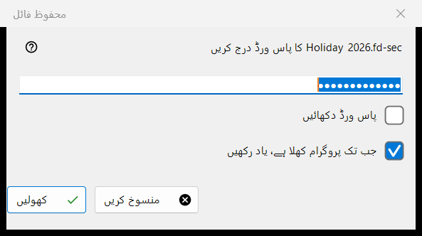
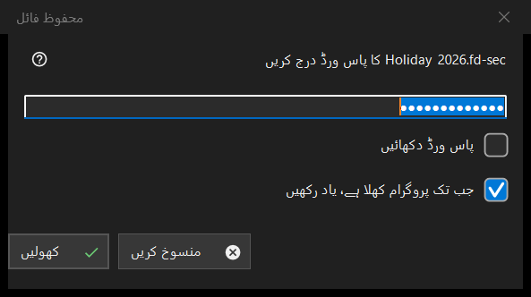

محفوظ فائل
یہ کس مقصد کے لیے ہے
ایک محفوظ کنٹینر، یعنی .fd-sec فائل، کا پاس ورڈ مانگتی ہے جب وہ سامنے آئے۔ یہ تب کھلتی ہے جب آپ Enter دبائیں یا مقفل فائل پر کلک کریں، اور خود بخود تب جب آپ ایسی فائل پر رکیں؛ سلائیڈ شو محفوظ فائلیں چھوڑ دیتا ہے اور انہیں گنتا ہے۔ مواد میموری سے دکھایا جاتا ہے: ڈی کرپٹ کی ہوئی کوئی چیز ڈسک پر نہیں لکھی جاتی۔ صرف جدید ویوئر میں۔


اس ترتیب میں
- پاس ورڈ ٹائپ کریں؛ وہ چھپا رہتا ہے۔
- اگر دوسرے کنٹینر بھی یہی پاس ورڈ استعمال کرتے ہیں تو جب تک پروگرام کھلا ہے، یاد رکھیں کا آپشن منتخب رکھیں۔
- کھولیں (Enter) دبائیں۔
- منسوخ (Esc) فائل کو مقفل رکھتا ہے۔
عناصر
پاس ورڈ
اشارے میں فائل کا نام ہوتا ہے۔ پاس ورڈ دکھائیں آپشن شروع میں بند ہوتا ہے۔ پاس ورڈ بالکل ویسا ہی لیا جاتا ہے جیسا ٹائپ ہوا اور مرکزی تھریڈ سے باہر جانچا جاتا ہے، اس لیے سست کلید اخذ کرنے کے دوران ویوئر جواب دیتا رہتا ہے؛ اسے کبھی رجسٹری، فائل یا Windows اسٹور میں نہیں لکھا جاتا۔
جب تک پروگرام کھلا ہے، یاد رکھیں
ڈیفالٹ طور پر منتخب۔ یہ پاس ورڈ کو پروگرام بند ہونے تک میموری میں رکھتا ہے، اور صرف تب جب اس سے واقعی کوئی کنٹینر کھلا ہو؛ پھر ویوئر اگلے کنٹینرز پر خاموشی سے اسے آزماتا ہے اور صرف تب پوچھتا ہے جب وہ نہ ملے۔
مسترد اور خالی پاس ورڈ
ناکام کوشش کے بعد ونڈو اس لائن کے ساتھ لوٹتی ہے: نہیں کھلا: پاس ورڈ غلط ہو سکتا ہے، فائل کبھی کنٹینر رہی ہی نہ ہو، یا اسے بدل دیا گیا ہو۔ یہ صورتیں جان بوجھ کر ایک جیسی دکھتی ہیں: غلط کلید اور بدلے ہوئے بائٹس میں فرق نہیں کیا جا سکتا۔ خراب یا غیر تعاون یافتہ کنٹینر کو اپنا پیغام ملتا ہے اور وہ پاس ورڈ ونڈو نہیں بلاتا۔ خالی پاس ورڈ قبول ہے: Enter کا پہلا دبانا ایک پیغام دکھاتا ہے اور دوسرا فائل کھولتا ہے؛ پیغام یہ ہے: خالی پاس ورڈ تحفظ نہیں ہے: ایسی فائل صرف سرسری نظر سے چھپی رہتی ہے۔ کھولنے کے لیے دوبارہ دبائیں۔
منسوخ
منسوخ، Esc اور بند کرنے کا بٹن ایک ہی راستہ ہیں اور کچھ نہیں بدلتے۔ فائل پر یہ لکھا نظر آتا ہے: پاس ورڈ درکار ہے - Enter دبائیں یا فائل پر کلک کریں، اور جب تک وہ فولڈر کھلا رہے ویوئر اس کے لیے دوبارہ نہیں پوچھتا۔ Enter یا فائل پر کلک دوبارہ پوچھتا ہے۔